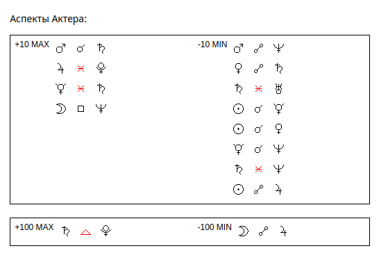
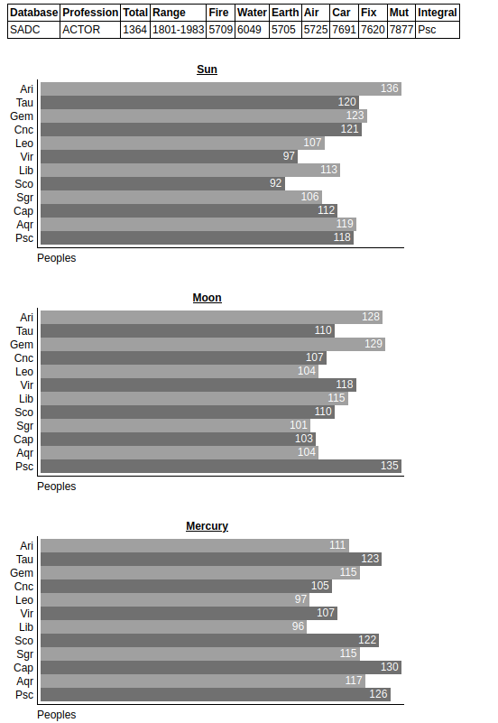

2025 Исследование программистов-фрилансеров
Текущий прогресс: 80%
Сбор дат рождений программистов-фриланесеров происходил около 10 лет назад из открытых источников. Всего было получено порядка 2058 дат. К сожалению, нет гарантий, что все данные соответствуют реальным людям. Для проверки требуются альтернативные данные.
Цель исследования:
- Поиск закономерностей между положением планет в момент рождения и склонностью к профессии программист-фрилансер.
...
Этот график демонстрирует, что случайно генерируя даты рождений мы не сможем получить такое же количество аспектов, которое встречается в реальных датах рождений программистов-фрилансеров. Иными словами их рождение происходило не случайным образом.
...
читать далее...


2024 Исследование браков и разводов
Текущий прогресс: 100%
Интерес для любителей астрологии представляет база опубликованная в 2017 году правительством Мексики со статистикой браков и разводов города Xalapa-Enriquez штата Veracruz за период с 2000 по 2015 год. В базе чуть более 4000 записей, есть даты заключения браков и даты рождения супругов. Базу можно исследовать по разным параметрам: совместимость партнеров, удачность/неудачность выбранных дат для заключения брака и т.д. К сожалению, в базе отсутствует время рождения. Взглянем, что же можно извлечь из этой базы.
...
Можно заметить преобладание огненной стихии в верхней половине таблицы, это соответствует тому, что пара со стихией Огонь+Огонь подавала на развод в городе Xalapa-Enriquez штата Veracruz с 2000 по 2015 на 62% чаще, чем пара со стихией Воздух+Воздух.
...
читать далее...


2024 Исследование землетрясений
Текущий прогресс: 60%
Исследование землетрясений методами астрологии
Цель исследования:
- Поиск закономерностей между положением планет и возникновением землетрясений
- Возможность прогнозирования землетрясений с помощью астрологии
...
- Лидеры по количеству землетрясений - Скорпион и Рыбы (в астрологии - представители водной стихии).
- Лидеры по минимальному количеству землетрясений - Водолей (0 категорий) и Козерог (1 категория с магнитудой 5.7 баллов).
- Водолей - cамый "миролюбивый" знак (не удалось обнаружить какое-либо значимое отклонение)
...
читать далее...


2020 Исследование видеоблогеров
Текущий прогресс: 100%
Самый быстрый способ научиться различать знаки зодиака - непосредственное наблюдение за их деятельностью. Используя всю мощь сообщества любителей астрологии на сайте запущен проект по исследованию видеоблоггеров.
...
Влоггеры часто рождались в период времени, когда наблюдалась квадратура Марса к Плутону (во внимание не берется ни в каких знаках находились указанные планеты, ни возможное влияние целого комплекса аспектов или других астрологических критериев).
...
читать далее...


2006 Исследование базы SADC
Текущий прогресс: 100%
Статистика по профессиям (база данных Steinbrecher Astrological Database).
...
Пусть известны даты рождения людей реализовавшихся в различных профессиях. Попробуем посмотреть насколько часто (или редко) встречаются одинаковые угловые расстояния (аспекты) у группы людей схожей профессии. Для этого посчитаем количество повторяющихся аспектов в датах их рождения, и если будут выявлены совпадения, проверим вероятность такого совпадения методами теории вероятности.
...
читать далее...


2005-2006 Исследование LiveJournal
Текущий прогресс: 100%
LiveJournal представляет собой сообщество людей ведущих on-line дневники, известные так же, как ЖивыеЖурналы (ЖЖ).
В дневниках люди делятся своим мировоззрением, группируются по интересам.
...
Судя по полученным результатам, в мае рождается большее число людей чем в ноябре. В общем случае тельцов на 1.5% рождается больше чем скорпионов.
...
Исследование сообществ
Исследование интересов
...
читать далее...